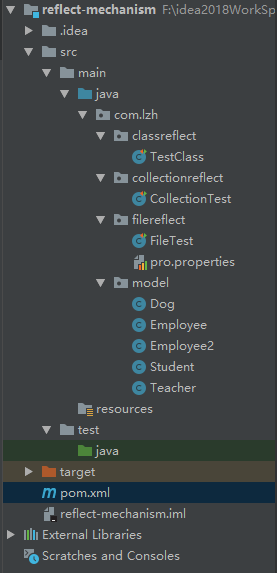

Java反射机制指的是在Java程序运行状态中，对于任何一个类，都可以获得这个类的所有属性和方法；对于给定的一个对象，都能够调用它的任意一个属性和方法。这种动态获取类的内容以及动态调用对象的方法称为反射机制。
与Java反射相关的类如下：
| 类名 | 用途 |
|---|---|
| Class类 | 代表类的实体，在运行的Java应用程序中表示类和接口 |
| Field类 | 代表类的成员变量（成员变量也称为类的属性） |
| Method类 | 代表类的方法 |
| Constructor类 | 代表类的构造方法 |
| 方法 | 用途 |
|---|---|
| asSubclass(Class<U> clazz) | 把传递的类的对象转换成代表其子类的对象 |
| Cast | 把对象转换成代表类或是接口的对象 |
| getClassLoader() | 获得类的加载器 |
| getClasses() | 返回一个数组，数组中包含该类中所有公共类和接口类的对象 |
| getDeclaredClasses() | 返回一个数组，数组中包含该类中所有类和接口类的对象 |
| forName(String className) | 根据类名返回类的对象 |
| getName() | 获得类的完整路径名字 |
| newInstance() | 创建类的实例 |
| getPackage() | 获得类的包 |
| getSimpleName() | 获得类的名字 |
| getSuperclass() | 获得当前类继承的父类的名字 |
| getInterfaces() | 获得当前类实现的类或是接口 |
| 方法 | 用途 |
|---|---|
| getField(String name) | 获得某个公有的属性对象 |
| getFields() | 获得所有公有的属性对象 |
| getDeclaredField(String name) | 获得某个属性对象 |
| getDeclaredFields() | 获得所有属性对象 |
| 方法 | 用途 |
|---|---|
| getAnnotation(Class<A> annotationClass) | 返回该类中与参数类型匹配的公有注解对象 |
| getAnnotations() | 返回该类所有的公有注解对象 |
| getDeclaredAnnotation(Class<A> annotationClass) | 返回该类中与参数类型匹配的所有注解对象 |
| getDeclaredAnnotations() | 返回该类所有的注解对象 |
| 方法 | 用途 |
|---|---|
| getConstructor(Class...<?> parameterTypes) | 获得该类中与参数类型匹配的公有构造方法 |
| getConstructors() | 获得该类的所有公有构造方法 |
| getDeclaredConstructor(Class...<?> parameterTypes) | 获得该类中与参数类型匹配的构造方法 |
| getDeclaredConstructors() | 获得该类所有构造方法 |
| 方法 | 用途 |
|---|---|
| getMethod(String name, Class...<?> parameterTypes) | 获得该类某个公有的方法 |
| getMethods() | 获得该类所有公有的方法 |
| getDeclaredMethod(String name, Class...<?> parameterTypes) | 获得该类某个方法 |
| getDeclaredMethods() | 获得该类所有方法 |
| 方法 | 用途 |
|---|---|
| isAnnotation() | 如果是注解类型则返回true |
| isAnnotationPresent(Class<? extends Annotation> annotationClass) | 如果是指定类型注解类型则返回true |
| isAnonymousClass() | 如果是匿名类则返回true |
| isArray() | 如果是一个数组类则返回true |
| isEnum() | 如果是枚举类则返回true |
| isInstance(Object obj) | 如果obj是该类的实例则返回true |
| isInterface() | 如果是接口类则返回true |
| isLocalClass() | 如果是局部类则返回true |
| isMemberClass() | 如果是内部类则返回true |
Filed代表类的成员变量（成员变量也称为类的属性）。
| 方法 | 用途 |
|---|---|
| equals(Object obj) | 属性与obj相等则返回true |
| get(Object obj) | 获得obj中对应的属性值 |
| set(Object obj, Object value) | 设置obj中对应属性值 |
Method代表类的方法。
| 方法 | 用途 |
|---|---|
| invoke(Object obj, Object... args) | 传递object对象及参数调用该对象对应的方法 |
Constructor代表类的构造方法。
| 方法 | 用途 |
|---|---|
| newInstance(Object... initargs) | 根据传递的参数创建类的对象 |
目录结构图

Student.class
package com.lzh.model;
import lombok.AllArgsConstructor;
import lombok.Data;
import lombok.NoArgsConstructor;
import lombok.ToString;
/**
* @author lzh
* create 2019-10-27-10:38
*/
public class Student {
private String name;
private Integer age;
public Student() {
}
private Student(String name){
this.name = name;
}
public Student(String name, Integer age) {
this.name = name;
this.age = age;
}
@Override
public String toString() {
return "Student{" +
"name='" + name + '\'' +
", age=" + age +
'}';
}
}
Employee.class
package com.lzh.model;
/**
* @author lzh
* create 2019-10-27-16:32
*/
public class Employee {
public void show(){
System.out.println("is show()");
}
}
Employee2
package com.lzh.model;
/**
* @author lzh
* create 2019-10-27-16:32
*/
public class Employee2 {
public void show2(){
System.out.println("is show2()");
}
}
Dog.class
package com.lzh.model;
/**
* @author lzh
* create 2019-10-27-10:36
*/
public class Dog {
private String name;
private Integer age;
public String type;
public Integer height;
private Dog() {
}
private Dog(String name, Integer height) {
this.name = name;
this.height = height;
}
public Dog(String name, String type, Integer height, Integer age) {
this.name = name;
this.type = type;
this.height = height;
this.age = age;
}
@Override
public String toString() {
return "Dog{" +
"name='" + name + '\'' +
", age=" + age +
", type='" + type + '\'' +
", height=" + height +
'}';
}
}
Teacher.class
package com.lzh.model;
/**
* @author lzh
* create 2019-10-27-16:14
*/
public class Teacher {
public void show1(String s) {
System.out.println("调用了：公有的，String参数的show1(): s = " + s);
}
protected void show2() {
System.out.println("调用了：受保护的，无参的show2()");
}
void show3() {
System.out.println("调用了：默认的，无参的show3()");
}
private String show4(int age) {
System.out.println("调用了，私有的，并且有返回值的，int参数的show4(): age = " + age);
return "abcd";
}
}测试类，反射可获取私有属性和私有方法并进行操作
package com.lzh.classreflect;
import com.lzh.model.Dog;
import com.lzh.model.Student;
import org.junit.Test;
import java.lang.reflect.Constructor;
import java.lang.reflect.Field;
import java.lang.reflect.InvocationTargetException;
import java.lang.reflect.Method;
/**
* @author lzh
* create 2019-10-27-10:39
*/
public class TestClass {
@Test
public void getClassTest() {
//1、获得Class：主要有三种方法：
//第一种方式获取Class对象
Student student = new Student();
Class stuClass1 = student.getClass();
System.out.println(stuClass1.getName());
//第二种方式获取Class对象
Class stuClass2 = Student.class;
System.out.println(stuClass2.getName());
System.out.println(stuClass1 == stuClass2);
//第三种方式获取Class对象
try {
Class stuClass3 = Class.forName("com.lzh.model.Student");//注意此字符串必须是真实路径，就是带包名的类路径，包名.类名
System.out.println(stuClass3 == stuClass2);//判断三种方式是否获取的是同一个Class对象
} catch (ClassNotFoundException e) {
e.printStackTrace();
}
}
@Test
public void isInstanceTest(){
Student student = new Student();
//判断是否为某个类
System.out.println(student instanceof Student);
}
@Test
public void newObjectTest() throws IllegalAccessException, InstantiationException, NoSuchMethodException, InvocationTargetException {
//创建实例：通过反射来生成对象主要有两种方法
//1.使用Class对象的newInstance()方法来创建Class对象对应类的实例。
Class c = Student.class;
Object stu1 = c.newInstance();
//2.先通过Class对象获取指定的Constructor对象，再调用Constructor对象的newInstance()方法来创建对象，这种方法可以用指定的构造器构造类的实例。
Class<?> stu2 = Student.class;
//通过Class对象获取指定的Constructor构造器对象
Constructor<?> constructor = stu2.getConstructor(String.class, Integer.class);
Object raicho = constructor.newInstance("raicho", 21);
System.out.println(raicho);
}
@Test
public void getConstructorTest() throws IllegalAccessException, InvocationTargetException, InstantiationException, NoSuchMethodException {
Class<?> stu = Student.class;
//所有"公有的"构造方法
Constructor<?> constructor = stu.getConstructor(String.class, Integer.class);
Object stu1 = constructor.newInstance("raicho_one", 21);
System.out.println(stu1);
System.out.println("----------------------------------");
//获取所有的构造方法(包括私有、受保护、默认、公有)
Constructor<?>[] constructors=stu.getDeclaredConstructors();
for (Constructor<?> constructor1 : constructors) {
System.out.println(constructor1);
}
//根据构造器创建实例：
Object obj = constructors[0].newInstance("小王",21);
System.out.println(obj);
System.out.println("----------------------------------");
//获取"某个构造方法"可以是私有的，或受保护、默认、公有；
Constructor<?> declaredConstructor = stu.getDeclaredConstructor(String.class);
//System.out.println("declaredConstructor="+declaredConstructor);
//设置越过安全检查
declaredConstructor.setAccessible(true);
Object stu2 = declaredConstructor.newInstance("raicho");
System.out.println(stu2);
System.out.println("获取所有构造器，包括私有");
Constructor<?>[] declaredConstructors = stu.getDeclaredConstructors();
for (Constructor<?> declaredConstructor1 : declaredConstructors) {
System.out.println(declaredConstructor1);
}
System.out.println("----------------------------------");
}
@Test
public void getsetPropertyTest() throws ClassNotFoundException, NoSuchMethodException, IllegalAccessException, InvocationTargetException, InstantiationException, NoSuchFieldException {
Class<?> dogClass = Class.forName("com.lzh.model.Dog");
System.out.println("************获取所有公有的字段********************");
Field[] fields = dogClass.getFields();
for (Field field : fields) {
System.out.println(field);
}
System.out.println("************获取所有的字段(包括私有、受保护、默认的)********************");
Field[] declaredFields = dogClass.getDeclaredFields();
for (Field declaredField : declaredFields) {
System.out.println(declaredField);
}
System.out.println("*************设置私有属性值***********************************");
Constructor<?> declaredConstructor = dogClass.getDeclaredConstructor();
declaredConstructor.setAccessible(true);
Dog dog1 = (Dog) declaredConstructor.newInstance();
System.out.println(dog1);
//dog1.setName("阿拉斯");
Field field = Dog.class.getDeclaredField("name");
field.setAccessible(true);
field.set(dog1,"阿拉斯");
System.out.println(dog1);
}
@Test
public void method() throws ClassNotFoundException, NoSuchMethodException, IllegalAccessException, InvocationTargetException, InstantiationException {
Class<?> teacherClass = Class.forName("com.lzh.model.Teacher");
System.out.println("***************获取所有的”公有“方法*******************");
Method[] methods = teacherClass.getMethods();
for (Method method : methods) {
System.out.println(method);
}
System.out.println("***************获取所有的方法，包括私有的*******************");
Method[] declaredMethods = teacherClass.getDeclaredMethods();
for (Method declaredMethod : declaredMethods) {
System.out.println(declaredMethod);
}
System.out.println("***************获取私有的show4()方法******************");
Method show4 = teacherClass.getDeclaredMethod("show4", int.class);
System.out.println(show4);
Object obj = teacherClass.getConstructor().newInstance();
//越过安全检查
show4.setAccessible(true);
Object result = show4.invoke(obj, 21);
System.out.println("返回值："+result);
}
}
通过反射越过集合泛型检查，为集合添加不同类型的数据
package com.lzh.collectionreflect;
import org.junit.Test;
import java.lang.reflect.InvocationTargetException;
import java.lang.reflect.Method;
import java.util.ArrayList;
import java.util.List;
/**
* @author lzh
* create 2019-10-27-17:15
*/
public class CollectionTest {
@Test
public void collectionTest() throws NoSuchMethodException, InvocationTargetException, IllegalAccessException {
//通过反射越过泛型检查
//有一个String泛型的集合，向这个集合中添加一个Integer类型的值
List<String> list = new ArrayList<String>();
list.add("aaa");
list.add("bbb");
//list.add(100); //报错
//获得集合Class对象
Class listClass = list.getClass();
//获得add()方法
Method add = listClass.getMethod("add", Object.class);
//调用add()方法
add.invoke(list,100);
for (Object s : list) {
System.out.println(s);
}
}
}
创建pro.properties文件，通过反射
className = com.lzh.model.Employee2
methodName = show2
加载配置文件，通过反射机制创建对象，在不修改代码的情况下动态修改配置文件创建新对象
package com.lzh.filereflect;
import org.junit.Test;
import java.io.*;
import java.lang.reflect.InvocationTargetException;
import java.lang.reflect.Method;
import java.util.Properties;
import java.util.ResourceBundle;
/**
* @author lzh
* create 2019-10-27-16:30
*/
public class FileTest {
@Test
public void fileTest() throws IOException, ClassNotFoundException, NoSuchMethodException, IllegalAccessException, InvocationTargetException, InstantiationException {
//1.通过反射获取Class对象
Class<?> employeeclass = Class.forName(getValue("className"));
// String className = getValue("className");
// System.out.println(className);
//2.获取show()方法
Method method = employeeclass.getMethod(getValue("methodName"));
//3.调用show()方法
method.invoke(employeeclass.getConstructor().newInstance());
//当我们升级这个系统时，不要Student类，而需要新写一个Student2的类时，这时只需要更改pro.properties的文件内容就可以了。代码就一点不用改动。
}
public String getValue(String key) throws IOException {
Properties properties = new Properties();
// 使用ClassLoader加载properties配置文件生成对应的输入流
InputStream in = new FileInputStream("F:\\idea2018WorkSpace\\reflect-mechanism\\src\\main\\java\\com\\lzh\\filereflect\\pro.properties");
// 使用properties对象加载输入流
properties.load(in);
//获取key对应的value值
String property = properties.getProperty(key);
return property;
}
}github代码:https://github.com/LZHDonald/reflect-mechanism
百度百科：https://baike.baidu.com/item/JAVA%E5%8F%8D%E5%B0%84%E6%9C%BA%E5%88%B6/6015990?fr=aladdin